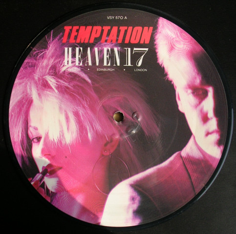

"Adorable creatures with unacceptable features,
trouble is coming; it's just the high cost of loving" -Temptation

The basics
Taking their name from the Anthony Burgess novel A Clockwork Orange, the U.K.
techno-pop trio
Heaven 17 grew out of the experimental dance project the British Electric Foundation, itself an
offshoot
of the electro-pop outfit Human League. The core of Heaven 17 was originally comprised of Martyn
Ware
and Ian Craig Marsh, a pair of onetime computer operators who first teamed in 1977 as the Dead
Daughters, a duo that integrated synthesizer patterns with a heavy reliance on tape loops. Soon,
Ware
and Marsh were joined by Philip Oakey and Adi Newton and changed their name to the Human League,
where
they remained before exiting together in 1980.
As a means of establishing the synthesizer as an expressive, human instrument, Marsh and Ware
formed
the
British Electric Foundation, a production project that employed a variety of musicians and
singers
including Tina Turner, Sandie Shaw, and Gary Glitter. The B.E.F.'s debut, 1980's Music of
Quality
and
Distinction, Vol. 1, also included vocalist Glenn Gregory, a former photographer whom Ware and
Marsh
met
at a Sheffield drama center; in 1981, the duo enlisted Gregory for Heaven 17, the first and most
successful B.E.F. alter ego, and debuted with the single "(We Don't Need This) Fascist Groove
Thang," a
minor hit banned by the BBC over its title. An album, Penthouse and Pavement, followed the same
year.
Discography
- Penthouse and Pavement (1981)
- The Luxury Gap (1983)
- How Men Are(1984)
- Pleasure One (1986)
- Teddy Bear, Duke Á Psycho (1988)
- Bigger Than America (1996)
- Before After (2005)
- Naked As Advertised (2008)
Origins and Early Career
Ian Craig Marsh and Martyn Ware were the founding members of pioneering Sheffield synthpop group
the
Human League; Glenn Gregory (who had previously been in a punk band called Musical Vomit with
Marsh)
had
been their original choice when seeking a lead singer for the band but as he had moved to London
to
work
as a photographer at the time, they chose Ware's school friend Philip Oakey instead. When
personal
and
creative tensions within the group reached a breaking point in late 1980, Marsh and Ware left
the
band,
ceding the Human League name to Oakey. They formed the production company British Electric
Foundation
(B.E.F.).
B.E.F.'s first recordings were a cassette-only album called Music for Stowaways and an LP called
Music
for Listening To, which was re-released on CD in 1997 with two extra tracks. Shortly after, they
completed their line-up when they recruited their friend, photographer Glenn Gregory, as
vocalist.
Taking their new name from a fictional pop band mentioned in Anthony Burgess's dystopian novel A
Clockwork Orange (where The Heaven Seventeen are at number 4 in the charts with "Inside"),
Heaven 17
was
intended to be just one of the musical projects for British Electric Foundation.
Like the Human League, Heaven 17 used synthesisers and drum machines heavily (the Linn LM-1
programmed
by Ware). Session musicians were used for bass guitar and guitar (John Wilson) and grand piano
(Nick
Plytas). Whereas the band's former colleagues the Human League had gone on to major chart
success in
1981, Heaven 17 struggled to make an impact. Their debut single "(We Don't Need This) Fascist
Groove
Thang" attracted some attention and was banned by the BBC due to concerns by Radio 1's legal
department
that it libelled Ronald Reagan, who had recently been elected President of the United States.
Neither
"Fascist Groove Thang" nor any of the three other singles taken from the band's debut album
Penthouse
and Pavement reached the UK Top 40. The album itself proved to be a success, however, peaking at
Number
14 on the UK Albums Chart, and was later certified gold by the BPI in 1982.
Their Music
In October 1982, Heaven 17 released their new single "Let Me Go", which charted just outside the
UK Top 40 (but reached the Irish Top 30). However, in 1983 the band's fortunes
changed.
Their next single, "Temptation" (on which they were augmented by vocalist Carol Kenyon and a
studio
orchestra), reached number 2 on the UK Singles Chart in spring 1983 and became their biggest
hit.
The
song was taken from their second album, The Luxury Gap, which featured further chart hits "Come
Live
with Me" (UK #5) and "Crushed by the Wheels of Industry" (UK #17). The album itself charted at
number 4
on the UK Albums Chart, their highest ever position, and was certified platinum by the BPI in
1984.
The early 1990s was a quiet period for the band, though Ware produced a second B.E.F. album in
1991,
to
follow 1982's original Music of Quality & Distinction. This album again featured Tina Turner and
Billy
Mackenzie, but this time also featured artists such as Scritti Politti's Green Gartside, Lalah
Hathaway,
Billy Preston, and Chaka Khan. Ware also became a producer for the likes of Terence Trent
D'Arby,
Soft
Cell's Marc Almond, and Erasure. Gregory, meanwhile, went on to form the band Honeyroot with
Keith
Lowndes, then Ugly with John Uriel and Ian Wright . In late 1992, a Brothers in Rhythm remix of
"Temptation" reached number 4 and was followed by the compilation album Higher and Higher – The
Best
of
Heaven 17 in 1993. Remixes of "(We Don't Need This) Fascist Groove Thang" and "Penthouse and
Pavement"
were also minor hits in 1993. However, the band would not release any new material as Heaven 17
until
1996's Bigger Than America. The album failed to chart in the UK.
On 16 February 2010, Heaven 17 joined La Roux to record a joint live session for the BBC which
was
shown
on the BBC Red Button interactive channel in January 2010. Glenn Gregory joined La Roux on stage
at
Glastonbury Festival on 26 June 2010, performing "Temptation". (La Roux cite Heaven 17 as one of
their
main influences).[20] The two acts also appeared live on stage at the War Child Brit Awards
aftershow in
February 2010.The band appeared on Later... with Jools Holland on 22 October 2010, performing
"(We
Don't
Need This) Fascist Groove Thang" and "Temptation" and appeared in BBC Children in Need in
November
2010.
They also made a tongue-in-cheek appearance in TV advertisements for Sheffield-based broadband
provider
Plusnet. On 22 November, the band released a 2 disc DVD combining never-seen-before documentary
and
rehearsal footage with the band's full live concert filmed in Sheffield in March 2010. Also
included
was
a unique collection of all the digital videos used in the live show, set to the accompanying
live
audio
from the performance. Each video was commissioned from a different visual artist and included
both
established up-and-coming artists from the worlds of digital and graphic design, fine art, and
film.
In September 2021 the group performed the first two Human League albums Reproduction (1979) and
Travelogue (1980) in Sheffield and London with long-standing collaborator Malcolm Garrett
providing
live
visuals on stage.